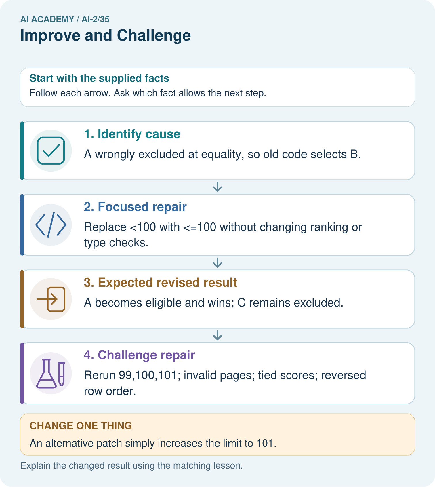
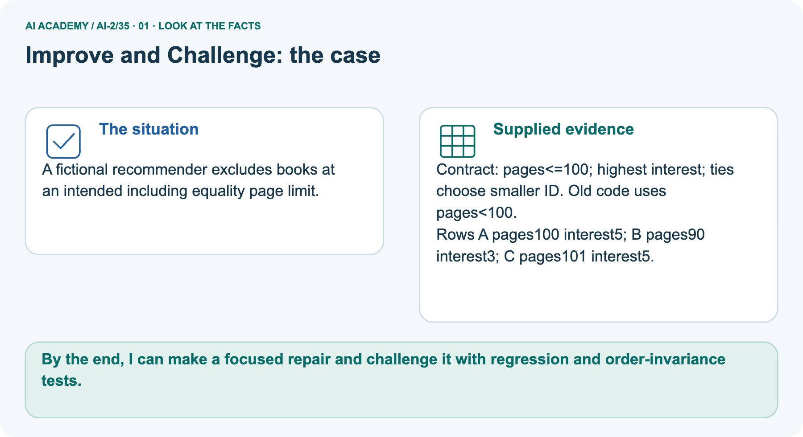
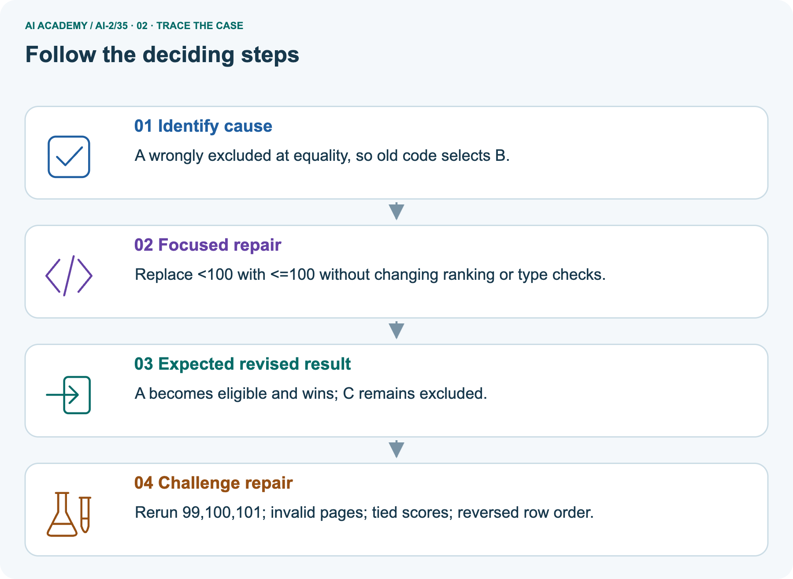
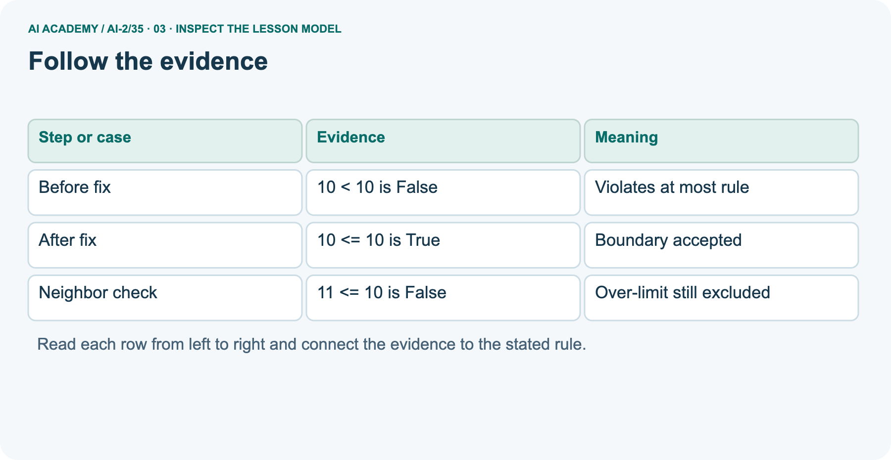
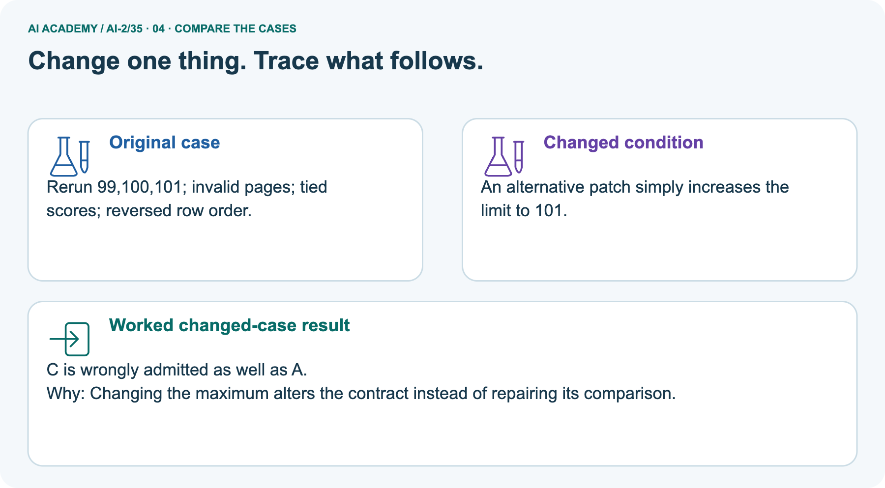
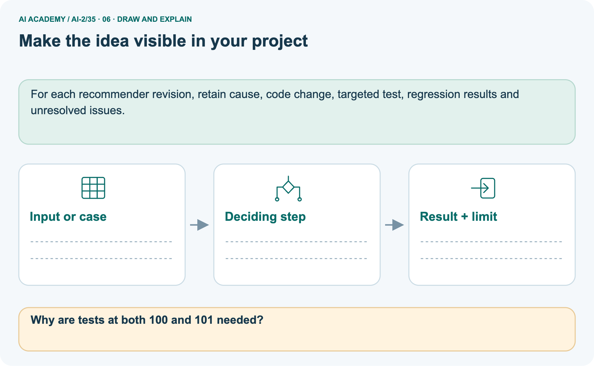

AI Academy · Level 2 · Grade 7 · Week 35 · Teacher guide
Improve and Challenge
Learn to understand, design, build, test and explain AI systems responsibly.
Project: Transparent Book Recommender
Teacher guide · 1 of 9
Improve and Challenge
Prepare Improve and Challenge: check the target, prerequisites, resources and adaptable teaching schedule.
Teach the learning cycle
Primary target: Repair a specific observed failure
| Session | Sequence and minutes | Resources |
|---|---|---|
| Session 1 · Understand · 45 min | 0–7: recall and prerequisite; 7–15: inspect the concrete case and predict; 15–30: teacher models the worked trace; 30–40: learners explain a step using the text and visual; 40–45: check the core idea. | Sections 1–6; record the brief recall in the workbook. |
| Session 2 · Practise · 45 min | 0–5: retrieve the procedure; 5–15: W2 completion practice; 15–23: explain and check with a partner; 23–30: each learner answers the misconception check; 30–40: targeted reteaching or a harder variation; 40–45: prepare the investigation. | Sections 7–10; use the matching workbook W2 and misconception check. |
| Session 3 · Investigate and transfer · 45 min | 0–5: retrieve the decision rule; 5–20: investigate or trace; 20–30: start the independent case; 30–38: connect the project; 38–43: act on feedback; 43–45: plan the return check. | Sections 9 and 11–14. Give extra time to finish the full task set; use Section 15 when the week includes a coding lab. |
This is a starting allocation of 135 minutes, not a validated duration. Preserve all named topics. Schedule extra time for connected examples, the full investigation, independent cases and project building.
Repeated copies of a case share one recorded attempt; they are not new evidence.
Retrieval answer guidance
Test Diverse Users
Without opening the old lesson, explain one key idea from Test Diverse Users. Give an example and a mistake that the idea helps you avoid.
Look for: Evaluate across varied cases
Reference example, not the only acceptable wording: Invalid-input handling fails both tested cases even though the overall pass fraction is 80 percent.
Project Problem and Success Test
Without opening the old lesson, explain one key idea from Project Problem and Success Test. Give an example and a mistake that the idea helps you avoid.
Look for: Define a small application purpose
Reference example, not the only acceptable wording: Suggest a suitable eligible activity for a teacher-supervised session; the teacher reviews and decides.
Evidence and Sources
Without opening the old lesson, explain one key idea from Evidence and Sources. Give an example and a mistake that the idea helps you avoid.
Look for: Explain the mechanism and terminology of claim support and citation evaluation
Reference example, not the only acceptable wording: Teacher explanation: Citation evaluation checks source existence, exact passage support and coverage of answer claims. A real citation can still be irrelevant.
For this classroom rubric count a claim as supported only when its cited passage entails it. Separately count correct citation links. Use the number of factual claims as the support denominator.
Use the student module and workbook section with this exact week title. The worked case, independent question and answers below form one aligned lesson sequence.
What the learner must demonstrate
After a scoring change, four old failures pass but two previous passes fail. On the original ten cases there were six passes. Compute the new total and explain what else should be reported.
Concept to explain
A controlled improvement changes one design choice and reruns the same tests.
| Term | Meaning |
|---|---|
| controlled improvement | A revision whose effect is checked under comparable conditions rather than assumed from a changed result. |
| before/after | Results recorded prior to and following a change; other changes can affect the comparison. |
| tradeoff | A situation where improving one desired property can make another harder to achieve. |
| regression | In testing, a new failure introduced by a change; in modelling, prediction of a numeric target. Use the meaning indicated by the lesson. |
Prepare the class
Use the supplied scenario, student illustrations and blank paper. For numeric work, offer counters or a calculator after learners show the setup. Fictional records are supplied; personal data and paid accounts are unnecessary.
Alternative compact allocation
This compact option is not the full-week schedule. Use the main teaching cycle and allow extra sessions for the investigation, independent work and project.
Allow 80 minutes: recall 8; explanation 12; worked demonstration 15; guided practice 20; independent assessment 15; project and reflection 10. Extend the lab into a second session when needed.
Preparation for the connected explanation
Teach Week 35 as a two-session investigation using fictional data. A fictional chooser wrongly excludes an activity at the exact time limit because it uses minutes < limit.
The requirement says at most, so equality must qualify. Repair that condition, then test below, at and above the boundary plus earlier tie and invalid-input behavior.
Assess the three stated outcomes through the independent task, not by copying the worked result.
Readiness answer
The change may introduce a regression elsewhere.
Python 3 editor with a fresh local practice file
Paper trace table and the student workbook
Fictional input records from this lesson; no real student identifiers
Apply the connected idea: Testing functions and interfaces
Teach Week 33 as a two-session investigation using fictional data. Test the chooser at two scales. A unit test checks one validator or score calculation. An integration test runs validation through selection and reporting.
Write expected outcomes from the specification, not by calling the same function twice. Assess the three stated outcomes through the independent task, not by copying the worked result.
Readiness answer
The later pipeline might still pass rejected rows to selection or mishandle its result.
Python 3 editor with a fresh local practice file
Paper trace table and the student workbook
Fictional input records from this lesson; no real student identifiers
End goal for the pictorial case
By the end, I can make a focused repair and challenge it with regression and order-invariance tests.
This added worked case illustrates the week’s main idea. Retain all original and connected topics; schedule its practice within the teaching cycle.
Teacher guide · 2 of 9
Explain the mechanism
Model Improve and Challenge using the supplied case, labelled mechanism and reasoning. Make the scope of each conclusion explicit.
Input → Process → Output
Trace the information. At each stage, ask what changed and how you could test it.
Which stage could fail even when the other two are correct? Explain:
Predict first. Then check each step. A correct answer without visible reasoning is incomplete evidence.
1. Before: 6/10 test profiles pass.
2. Error cluster: difficult books rank too high for emerging readers.
3. Change only difficulty weight from 1 to 3.
4. After: 8/10 pass; one adventure-focused profile ranks worse—record the tradeoff.
Recalculate, retrace, or restate the reasoning in your own representation:
CHECK Did the evidence answer the exact question? Did the total, path, or source record stay consistent?
Concrete teaching case
The teaching case
A repair raises success from 7/10 to 9/10 on the same validation set.
What belongs in the improvement claim?
Exact explanation to model
Why the result follows
Confirm fixed criteria, inspect remaining and introduced failures, then test the chosen version on fresh final cases.
Explain the added worked example
A fictional chooser wrongly excludes an activity at the exact time limit because it uses minutes < limit. The requirement says at most, so equality must qualify.
Repair that condition, then test below, at and above the boundary plus earlier tie and invalid-input behavior.
The repaired predicate prints 9 True, 10 True and 11 False. It assumes validated numeric durations; it is not a replacement for the schema validator.
A focused change is easier to explain and evaluate than unrelated edits made at the same time.
Key terms
| Term | Meaning |
|---|---|
| Regression suite | Earlier cases rerun after a change |
| Change log | A record of what changed and why |
| Root cause | The underlying reason for a failure |
| Residual risk | A limitation or possible failure remaining after a repair |
Apply the connected idea: Testing functions and interfaces
Test the chooser at two scales. A unit test checks one validator or score calculation. An integration test runs validation through selection and reporting.
Write expected outcomes from the specification, not by calling the same function twice.
Apply the connected idea: Testing functions and interfaces · 1
The code prints its success message only if all assertions pass. It checks the scoring component but says nothing about duration filtering, malformed records, ties or reporting. Add focused cases for those requirements.
Use the production functions from earlier weeks rather than rewriting a second copy just for tests.
The same defect can appear on both sides; it does not independently check the specified rule. Exit: 0 supplied/accepted/rejected/eligible, no selected item and a clear no-data or no-eligible explanation, without crashing.
Model the reasoning aloud
Use the complete worked example below before asking learners to complete W2. Reveal a small part, invite a prediction, then explain the deciding step.
These teacher notes contain solutions; do not reveal the independent case answer during modelling.
| Thinking move | Teacher prompt |
|---|---|
| Plan | What is given? What is the question? Which procedure fits these facts? |
| Do | Point to each input and intermediate step in the worked trace. Name the rule that allows the next step. |
| Check | Does the output answer the question? Which assumption or limitation prevents a larger claim? |
Use the diagram and verbal explanation together. Ask learners to match a sentence to a specific visual step; do not assign learners fixed visual or auditory learning styles.
A pictorial worked case: Improve and Challenge
A fictional recommender excludes books at an intended including equality page limit.
The facts we will use
Supplied facts
Contract: pages<=100; highest interest; ties choose smaller ID. Old code uses pages<100.
Supplied facts
Rows A pages100 interest5; B pages90 interest3; C pages101 interest5.

Read the picture one step at a time
Why this result follows
Why the result follows
A focused change makes the claim about what caused the error testable: the equality comparison rule caused this specific failure. Regression tests check surrounding behavior that should remain unchanged.
A tie case and reversed input order are necessary because a correct boundary does not ensure deterministic selection. Log the old failure and revised replay separately.
What this example does not establish
Keep the stated limit
Passing a small regression suite does not prove all behavior unchanged; record the suite’s actual coverage.
Change one thing in the pictured case
Change one thing
Change: An alternative patch simply increases the limit to 101.
Predicted result
Prediction: C is wrongly admitted as well as A.
Why the result follows
Reason: Changing the maximum alters the contract instead of repairing its comparison.
Ask while showing the picture
Ask while showing the picture · 2
Cover the result. Ask learners to name the inputs and predict the next step. Uncover one step, connect the icon to the actual procedure, and explain its evidence. Then change the supplied condition and compare.
The picture is a representation; it does not document execution of a real AI model.
Teacher guide · 3 of 9
Demonstrate and guide practice
Demonstrate Improve and Challenge, reduce support deliberately and check individual reasoning before discussing answers.
Board sequence
1. Put the facts on the board
Write the given facts: A repair raises success from 7/10 to 9/10 on the same validation set.
2. State the decision to explain
Write the question to explain: What belongs in the improvement claim?
3. Reveal the worked reasoning
Reveal after predictions: Confirm fixed criteria, inspect remaining and introduced failures, then test the chosen version on fresh final cases.
Hold back the independent task
Keep for an independent attempt: After changing a scoring weight, the system fixes one request but breaks two previously correct ones. What should the improvement record say?
Classroom dialogue
Ask the class
Ask: Which facts are given, and which would we have to assume? Learners mark relevant details before discussing answers.
Language to model
Say: Predict first. Show the rule, information path or calculation that would produce the result. A correct guess is not yet an explanation.
Reveal reasoning one step at a time. Explain why a tempting alternative fails. Write units and denominators for arithmetic, trace conditions for decisions, and identify supporting sources for claims.
In pairs, one learner solves while the other checks evidence; exchange roles. Remove the worked answer before independent assessment.
Model these guided questions
No. It would incorrectly accept 11 when the limit is 10. Exit: The strict comparison excluded the boundary; changed < to <=; below/at/above and prior checks rerun; finite tests and untested situations remain.
Accept equivalent specific records.
Case-specific teaching sequence
| Stage | Teacher action |
|---|---|
| Session 1 start to 7 minutes | Retrieve the prerequisite and explain the purpose in the opening section. |
| 7 to 20 minutes | Read the worked example and diagram; ask learners to trace each step aloud. |
| 20 to 33 minutes | Complete W1 and W2, then compare predictions with observed results. |
| 33 to 45 minutes | Collect the guided prediction before running; discuss a mismatch and its cause. |
| Session 2 start to 8 minutes | Retrieve the main rule without showing the previous answer. |
| 8 to 20 minutes | Use W3 to diagnose and repair the stated failure; rerun an earlier case. |
| 20 to 35 minutes | Collect W4 independently, including code or plan, predictions and explanations, before hints. |
| 35 to 45 minutes | Discuss W5 and the exit; use the fresh retry when support was needed. |
Teach the connected idea
| Stage | Teacher action |
|---|---|
| Session 1 start to 7 minutes | Retrieve the prerequisite and explain the purpose in the opening section. |
| 7 to 20 minutes | Read the worked example and diagram; ask learners to trace each step aloud. |
| 20 to 33 minutes | Complete W1 and W2, then compare predictions with observed results. |
| 33 to 45 minutes | Collect the guided prediction before running; discuss a mismatch and its cause. |
| Session 2 start to 8 minutes | Retrieve the main rule without showing the previous answer. |
| 8 to 20 minutes | Use W3 to diagnose and repair the stated failure; rerun an earlier case. |
| 20 to 35 minutes | Collect W4 independently, including code or plan, predictions and explanations, before hints. |
| 35 to 45 minutes | Discuss W5 and the exit; use the fresh retry when support was needed. |
Reduce help deliberately
Completion practice
Completion task: For limit 15, give expected eligibility at 14, 15 and 16.
Reasoning to listen for
Teacher check: True, True, False.
Start by identifying the given inputs together. Leave the intermediate steps blank. If needed, model one step, then withdraw that help on the next step. Move to a full trace only when the partial trace is understood.
For partners, alternate explainer and checker; collect a response from every learner before discussion.
Individual reasoning check
Use the worked case for Improving without hiding failures. Proposed explanation: “A successful run proves the conclusion”. Decide whether this explanation is supported.
Point to the step or supplied fact that decides; explain your repair if needed.
Expected repair
Expected correction: A clean regression run does not erase the earlier failure. Keep before/after evidence and remaining limitations.
If a fix was informed by reserved evaluation cases, report that contamination and obtain new independent cases.
Collect explanations, not only yes/no votes. If a misunderstanding is common, re-model the relevant step for the class.
If it affects a few learners, give a short targeted group explanation while others solve a more demanding variation.
Connected teaching cycle: Testing functions and interfaces
Target: Test functions and their connections
Reserve further sessions for this topic; the 135-minute primary plan does not absorb all added content.
Completion practice: What expected score should a test use for fun 4 and learning 3?
Reasoning to listen for
Teacher check: 11 from 2 * 4 + 3, calculated independently.
Individual check: For Testing functions and interfaces, use its worked case to evaluate this proposed explanation: “A successful run proves the conclusion”. Explain the deciding step.
Expected repair
Expected correction: Test results establish only the executed cases on the tested version. Retain failures and version information.
Use explicit expected rejection behavior for invalid data instead of assuming every exception is acceptable.
Apply the same support, independent transfer and delayed-review decisions to the named connected-topic workbook tasks.
Pictorial practice question
Why are tests at both 100 and 101 needed?
Reasoned teacher answer
100 confirms equality is accepted; 101 confirms values above the unchanged maximum remain rejected.
Changed-case reasoning: C is wrongly admitted as well as A. Changing the maximum alters the contract instead of repairing its comparison.
Collect each learner’s explanation before discussion. Use the first missing connection between input, deciding step and result to choose support. This question is worked-case practice, not fresh mastery evidence.
Teacher guide · 4 of 9
Run the weekly evidence lab
Run the Improve and Challenge investigation and use the first unsupported step to choose a teaching response.
Words You Can Use to Reason
A definition matters when you can recognize the idea, use it, and contrast it with a near-miss.
Predict → Test → Record → Explain
Keep expected and actual results separate. Surprises are useful data when recorded honestly.
Choose one evidence-backed change, freeze the test set, predict effects, rerun every case, compare 6/10 to 8/10, and inspect regressions.
What did the hardest test teach you that the normal test did not?
Make the lab runnable
Use the concrete case as the shared normal case and the independent question as a second case. Each pair creates a boundary or missing-information case and predicts its result before testing.
Keep the expected result separate from an observed mistake.
| Record | What to capture |
|---|---|
| Input or evidence | Exact data, instruction or claim |
| Expected result | Answer or safe fallback declared before the run |
| Observed result | Actual result, including errors |
| Explanation | Rule, calculation or evidence explaining the outcome |
| Next test | One justified change and a new prediction |
Diagnose and reteach
For guessing, return to given facts and request a trace. For vocabulary without application, use one example and one non-example. For arithmetic errors, check the setup before the calculation.
Finish with a different uncoached case before recording mastery.
Address these additional misconceptions
A successful run proves the conclusion: A clean regression run does not erase the earlier failure. Keep before/after evidence and remaining limitations.
If a fix was informed by reserved evaluation cases, report that contamination and obtain new independent cases.
Matching the example is enough: Require the new W4 case, explicit predictions and an explanation. Fresh retry: rating validity should include 0 through 5 but a bug uses 0 < rating < 5.
Repair to inclusive bounds; test -1,0,1,5,6 giving False,True,True,True,False.
A convenient shortcut preserves meaning: Changing the expected boundary result to False would make the test pass while violating the requirement.
Keep the requirement and independently calculated expectation; repair the implementation. If requirements truly change, document that as a policy change.
Check these misconceptions
A successful run proves the conclusion: Test results establish only the executed cases on the tested version. Retain failures and version information.
Use explicit expected rejection behavior for invalid data instead of assuming every exception is acceptable.
Matching the example is enough: Require the new W4 case, explicit predictions and an explanation. Fresh retry: X valid (minutes 8, fun 3, learning 3), Y valid (9,4,1), Z invalid missing fun, limit 9.
X/Y tie at 9; X wins; counts 3/2/1/2.
A convenient shortcut preserves meaning: A test suite that only checks the winner name can miss wrong rejection counts. Check the full expected report: supplied, accepted, rejected, eligible, selected and reason.
Avoid relying on dictionary display order when the contract concerns values.
Match the support to the first error
| What the response shows | Next teaching action |
|---|---|
| Missing or misread facts | Read the case aloud, mark supplied versus unknown facts, and let the learner restate it. |
| Wrong procedure | Return to the deciding step in the worked case. Contrast it with the proposed incorrect explanation. |
| Arithmetic or implementation error | Trace intermediate values or lines; preserve the first mismatch and retry that step. |
| Correct result without a reason | Ask for a trace and a changed case before marking independent understanding. |
| An unsupported wider claim | Ask which supplied evidence supports the claim and which further observation would be needed. |
Offer an oral explanation, drawing, enlarged visual or fewer examples when that removes a reading/writing barrier. Keep the same reasoning goal.
Stretch secure learners by changing a boundary or assumption and asking them to defend the effect, not simply by assigning more of the same questions.
Teacher guide · 5 of 9
Assess and explain the answers
Use the Improve and Challenge questions, teacher keys and criteria after the relevant attempts. Previously discussed cases are practice; protect the separately selected independent task.
Worked case answer
Teacher key · Worked case answer
Confirm fixed criteria, inspect remaining and introduced failures, then test the chosen version on fresh final cases.
Independent question
Independent question · withhold the key
After changing a scoring weight, the system fixes one request but breaks two previously correct ones. What should the improvement record say?
Expected independent answer
Teacher key · Expected independent answer
Report the fixed and newly broken cases, compare the same test set, and decide using the stated success criteria. One repaired example alone does not prove overall improvement.
What counts as evidence
| Criterion | 0 points | 1 point | 2 points |
|---|---|---|---|
| Result | Incorrect or absent | Partly correct | Correct with necessary conditions |
| Reasoning | No supporting trace | Some steps | Clear mechanism, calculation or source support |
| Limit | Overclaims certainty | Vague limitation | Relevant uncertainty or missing fact |
| Transfer | Copies without adapting | Adapts with prompts | Solves a changed case independently |
Use 6/8 as a classroom checkpoint, with 2 required for both Result and Reasoning. This is a proposed teaching rule, not a validated certification threshold.
Do not count a coached answer as independent mastery; correct unsafe or unsupported claims regardless of total.
Feedback
Ask the learner to find the evidence that challenges this claim: “Fixing one example proves a change is beneficial overall.” Keep the first attempt and an uncoached retry separate.
Original transfer answer
Teacher key · Original transfer answer
New total is 6+4−2=8/10. Report which four failures were fixed and which two regressions appeared, along with the exact change.
Use a fresh final set after selecting the version; repeatedly tuning on ten cases makes them validation data.
Explanations for the additional workbook examples
W1 Locate the cause
Workbook question · W1
Why does minutes < limit reject a valid exactly-at-limit activity?
Teacher reasoning · W1
Strict less-than excludes equality; at most requires <=.
Teacher reasoning · W1
If minutes equals limit, minutes < limit evaluates to False because the comparison is strict. The phrase at most includes equality, so the validated-duration predicate must be minutes <= limit.
Test below, at and above the limit to reveal this difference.
W2 Test neighbors
Workbook question · W2
For limit 15, give expected eligibility at 14, 15 and 16.
Teacher reasoning · W2
True, True, False.
Teacher reasoning · W2
With limit 15, compare each value using <=: 14 <= 15 is True, 15 <= 15 is True, and 16 <= 15 is False. Keep equality visible as the boundary case rather than testing only clearly short and clearly long activities.
W3 Reject a bad fix
Workbook question · W3
A proposed fix accepts minutes <= limit + 1. Give a counterexample at limit 15.
Teacher reasoning · W3
It accepts 16, which should be excluded.
Teacher reasoning · W3
Set minutes to 16 and limit to 15. The proposed condition checks 16 <= 16 and accepts it, but the requirement checks 16 <= 15 and rejects it.
This single counterexample demonstrates that adding one to the limit changed the policy rather than repairing it.
W4 Repair independently
Workbook question · W4
Write the eligibility predicate for at most 12 minutes and a regression set including 11,12,13 and 0. Add one chooser tie case and one invalid-data case to rerun.
Teacher reasoning · W4
Use minutes <= limit after validation. Expectations True, True, False, True. Include a deterministic tie case and a schema-invalid row that never reaches selection; state expected outcomes.
W5 Write the change log
Workbook question · W5
Record the bug, change, evidence and one remaining limit without claiming all bugs are gone.
Teacher reasoning · W5
The strict comparison excluded the boundary; changed < to <=; below/at/above and prior checks rerun; finite tests and untested situations remain. Accept equivalent specific records.
Testing functions and interfaces — W1 Choose test scale
Classify testing score(3,2) versus running raw rows through the whole chooser.
The first is a unit check of scoring; the second is an integration check.
Testing functions and interfaces — W2 Calculate an oracle
What expected score should a test use for fun 4 and learning 3?
11 from 2 * 4 + 3, calculated independently.
Calculate the expected score from the written rule: 2*4 + 3 = 11. Record 11 before running score.
Computing the expectation by calling the same score function would allow a shared implementation error to appear on both sides of the comparison.
Testing functions and interfaces — W3 Repair a weak test
A test compares recommend(items,10) to itself. Replace it with a useful assertion.
Use a controlled fixture and an independently specified expected winner, plus relevant report counts and reason.
Testing functions and interfaces — W4 Test independently
Design an integration fixture: A valid (minutes 10, fun 2, learning 4), B valid (10,3,2), C invalid (5,9,1), limit 10. State winner, counts and a reversed-order expectation.
3 supplied, 2 accepted, 1 rejected, 2 eligible. A and B score 8; A wins alphabetically. Reversing order preserves A and the counts.
Testing functions and interfaces — W5 Cover absence
What expected result should an empty-input integration case specify?
0 supplied/accepted/rejected/eligible, no selected item and a clear no-data or no-eligible explanation, without crashing.
Assess independent transfer
Independent question · withhold the key
Selected case: Write the eligibility predicate for at most 12 minutes and a regression set including 11,12,13 and 0. Add one chooser tie case and one invalid-data case to rerun.
Selected case answer
Teacher key · Selected case answer
Use minutes <= limit after validation. Expectations True, True, False, True. Include a deterministic tie case and a schema-invalid row that never reaches selection; state expected outcomes.
| Dimension | Evidence required |
|---|---|
| Explanation | Names the applicable idea or procedure and ties it to the supplied facts. |
| Trace and result | Preserves the given inputs and shows the relevant intermediate steps; distinguishes a prediction from an observed execution. |
| Limits | States the assumptions, missing evidence or conditions under which the result would change. |
Teacher key · Selected case answer
Record each dimension as not yet, with support, or independent. Accept a valid alternative procedure with a defensible trace.
Do not penalise an honestly recorded model failure if the learner correctly explains its evidence and limits.
Feedback that the learner uses
Name the earliest unsupported step and give one action to repair it. Have the learner make that repair now and explain why. Then assess the relevant skill on a fresh, fully specified case.
Confirm it was not previously practised with feedback; solve and check the new case before assigning it. A follow-up design prompt is a starting brief, not automatically an equivalent test.
Teacher guide · 6 of 9
Connect and extend learning
Connect Improve and Challenge to Transparent Book Recommender, adapt support and plan a later changed-case check.
Transparent Book Recommender
Publish the cause, one change, fixed test set, before/after evidence, and remaining limitation.
Keep the decision, input, result, explanation and remaining limitation in the project evidence record. Retrieve this record next week rather than restarting the project.
Support and stretch
Trace one record or condition at a time with counters and labelled columns. Stretch: introduce a tie, boundary or missing field and declare its handling policy before rerunning.
Exit reflection
Ask for one decision the learner can now justify and one situation requiring more evidence or human review. Confidence ratings are separate from correct independent performance.
Bridge to the next week
Next: Week 36: Capstone Expo. Retrieve today’s evidence and identify what carries forward and what is new.
Support and fresh reassessment
Compare a requirement sentence and one condition side by side. Extension: introduce one deliberate mutation and explain which regression case detects it.
Independent W4 evidence: Use minutes <= limit after validation. Expectations True, True, False, True. Include a deterministic tie case and a schema-invalid row that never reaches selection; state expected outcomes.
Record whether the learner needed no help, a hint or explanation. Fresh retry: rating validity should include 0 through 5 but a bug uses 0 < rating < 5.
Repair to inclusive bounds; test -1,0,1,5,6 giving False,True,True,True,False.
Next week: Defending the data application. Reuse this week's explicit contracts and evidence.
Readiness and reassessment for Testing functions and interfaces
Provide a requirements-to-tests table. Extension: deliberately change the scoring multiplier and confirm a revealing test fails before restoring the implementation.
Independent W4 evidence: 3 supplied, 2 accepted, 1 rejected, 2 eligible. A and B score 8; A wins alphabetically. Reversing order preserves A and the counts. Record whether the learner needed no help, a hint or explanation.
Fresh retry: X valid (minutes 8, fun 3, learning 3), Y valid (9,4,1), Z invalid missing fun, limit 9. X/Y tie at 9; X wins; counts 3/2/1/2.
Plan the delayed return
Suggested return points in this level: ai-2/36. Use actual classroom dates, adjusting for holidays and gaps. One, three and six teaching weeks are scheduling choices, not a claimed optimal spacing.
At a delayed check, ask for the idea from memory and a changed application. Compare with the earlier independent response and record support used.
For a new level, revisit the previous capstone before checking the new prerequisites.
| Record | Teacher evidence |
|---|---|
| Learner code and date | |
| Concept and case used; prior exposure | |
| Explanation / trace / limits | |
| Support and first repair | |
| Changed case and delayed outcome | |
| Next teaching action |
Use the evidence to choose reteaching or the next step. A completed page, confidence rating or attractive project does not by itself demonstrate understanding.
Project evidence from this case
For each recommender revision, retain cause, code change, targeted test, regression results and unresolved issues.
Teacher guide · 7 of 9
Prepare, teach and assess
Use this preparation summary alongside the detailed Improve and Challenge lesson; it is a checklist rather than a replacement for the full sequence.
Teaching target
Teaching target: Repair a specific observed failure
Prepare the labelled worked-case picture, the matching workbook, fictional input cards and a place for individual responses. No paid AI account is required for the paper reasoning activities.
| Session | Plan | Resources |
|---|---|---|
| Session 1 · Understand · 45 min | 0–7: recall and prerequisite; 7–15: inspect the concrete case and predict; 15–30: teacher models the worked trace; 30–40: learners explain a step using the text and visual; 40–45: check the core idea. | Sections 1–6; record the brief recall in the workbook. |
| Session 2 · Practise · 45 min | 0–5: retrieve the procedure; 5–15: W2 completion practice; 15–23: explain and check with a partner; 23–30: each learner answers the misconception check; 30–40: targeted reteaching or a harder variation; 40–45: prepare the investigation. | Sections 7–10; use the matching workbook W2 and misconception check. |
| Session 3 · Investigate and transfer · 45 min | 0–5: retrieve the decision rule; 5–20: investigate or trace; 20–30: start the independent case; 30–38: connect the project; 38–43: act on feedback; 43–45: plan the return check. | Sections 9 and 11–14. Give extra time to finish the full task set; use Section 15 when the week includes a coding lab. |
Before class, solve the supported practice: For limit 15, give expected eligibility at 14, 15 and 16.
Supported practice answer
Reasoned practice answer: True, True, False.
Check every learner before discussion: Use the worked case for Improving without hiding failures. Proposed explanation: “A successful run proves the conclusion”. Decide whether this explanation is supported.
Point to the step or supplied fact that decides; explain your repair if needed.
Repair the misconception
Misconception repair: A clean regression run does not erase the earlier failure. Keep before/after evidence and remaining limitations.
If a fix was informed by reserved evaluation cases, report that contamination and obtain new independent cases.
Support without giving away the answer
Support: read the exact case aloud, enlarge the labelled picture, supply input cards and model only the first deciding step. Accept a spoken explanation or drawing; retain the reasoning goal.
Extend the reasoning
Extension: An alternative patch simply increases the limit to 101. Require a prediction and a reason before comparing. Expected result: C is wrongly admitted as well as A.
Reason: Changing the maximum alters the contract instead of repairing its comparison.
Protect the independent attempt
Independent assessment: withhold the reserved answer until the learner has attempted the new case. Record support separately from correctness.
| Criterion | Not yet | With support | Independent |
|---|---|---|---|
| Explanation | Names an answer without a deciding fact | Uses a hint to link fact and decision | Explains the deciding fact in own words |
| Trace or test | Cannot connect input and result | Completes steps with prompts | Traces or tests a changed case accurately |
| Limits and revision | Claims more than evidence supports | Names a limit after a prompt | States a defensible limit and useful next test |
Project checkpoint
Project checkpoint: Present and defend. Demonstrate the system, explain one failure and justify the next improvement with evidence.
Use the weekly teacher answer for topic-specific reasoning. A saved progress tick is an activity record; judge mastery from the learner’s explanation and evidence.
Teacher guide · 8 of 9
Use feedback, labs and repair paths
Use feedback, earlier review and portfolios purposefully. Apply the coding routine only when this lesson has an executable lab.
Use the two formative questions as supported practice, not as independent mastery scores. Discuss the deciding evidence rather than accepting a guessed selection.
The feedback comes from the reviewed public worked case. Do not reveal the separately reserved independent teacher answer until the learner has attempted that case.
Ask students to predict before running code. Preserve errors and actual outputs; collect a changed test and an explanation. The branch-boundary and indexing lessons deliberately include failure cases.
Use the earlier worked-explanation links to address a specific missing building block, then return to the current question. Adapt this suggestion after observing the learner; it is not an automatic diagnosis.
Collect the completed-work portfolio as evidence. Record support separately from correctness, and assess explanation, trace/test and limitations. Progress ticks and quiz selections alone do not establish mastery.
Teacher guide · 9 of 9
Visual concept journey
Show one Improve and Challenge graphic at a time, request a prediction and discuss its trace before the independent assessment.
Use one picture at a time. Hide a worked result before asking for a prediction, then reveal it for feedback. These are supported teaching cases; retain the separate independent assessment for a fresh first attempt.
01. Improve and Challenge: the case

A fictional recommender excludes books at an intended including equality page limit. Supplied facts: Contract: pages<=100; highest interest; ties choose smaller ID. Old code uses pages<100.
Rows A pages100 interest5; B pages90 interest3; C pages101 interest5.
Point to the given fact that matters most. Explain why it matters.
Discuss while showing the picture
Teacher prompt: Point to the given fact that matters most. Explain why it matters. Ask learners to describe one label or arrow in ordinary words. Use the adjacent transcript if the image is difficult to see.
02. Follow the deciding steps

Identify cause: A wrongly excluded at equality, so old code selects B. → Focused repair: Replace <100 with <=100 without changing ranking or type checks. → Expected revised result: A becomes eligible and wins; C remains excluded. → Challenge repair: Rerun 99,100,101; invalid pages; tied scores; reversed row order.
Point to each numbered stage and explain which recorded input it uses.
Discuss while showing the picture
Teacher prompt: Point to each numbered stage and explain which recorded input it uses. Ask learners to describe one label or arrow in ordinary words. Use the adjacent transcript if the image is difficult to see.
03. Follow the evidence

Follow the evidence. Before fix | 10 < 10 is False | Violates at most rule. After fix | 10 <= 10 is True | Boundary accepted. Neighbor check | 11 <= 10 is False | Over-limit still excluded
Read the labels and values. Explain the relationship the model shows.
Discuss while showing the picture
Teacher prompt: Read the labels and values. Explain the relationship the model shows. Ask learners to describe one label or arrow in ordinary words. Use the adjacent transcript if the image is difficult to see.
04. Change one thing. Trace what follows.

Original case: Rerun 99,100,101; invalid pages; tied scores; reversed row order. Changed condition: An alternative patch simply increases the limit to 101. Expected result: C is wrongly admitted as well as A.
Reason: Changing the maximum alters the contract instead of repairing its comparison.
Predict before checking the worked changed-case result. Name what changed and what the supplied facts allow you to conclude.
Discuss while showing the picture
Teacher prompt: Predict before checking the worked changed-case result. Name what changed and what the supplied facts allow you to conclude. Ask learners to describe one label or arrow in ordinary words.
Use the adjacent transcript if the image is difficult to see. Changed-case reasoning: Changing the maximum alters the contract instead of repairing its comparison.
05. Connect the explanation to its limit

A focused change makes the claim about what caused the error testable: the equality comparison rule caused this specific failure. Regression tests check surrounding behavior that should remain unchanged.
A tie case and reversed input order are necessary because a correct boundary does not ensure deterministic selection. Log the old failure and revised replay separately.
Limit: Passing a small regression suite does not prove all behavior unchanged; record the suite’s actual coverage.
Explain the case, then point to a limit on the claim.
Discuss while showing the picture
Teacher prompt: Explain the case, then point to a limit on the claim. Ask learners to describe one label or arrow in ordinary words. Use the adjacent transcript if the image is difficult to see.
Keep the stated scope: Passing a small regression suite does not prove all behavior unchanged; record the suite’s actual coverage.
06. Make the idea visible in your project

For each recommender revision, retain cause, code change, targeted test, regression results and unresolved issues. Draw your input, deciding step, result and limit. Supported question: Why are tests at both 100 and 101 needed?
Draw your project trace and justify the deciding step using evidence.
Discuss while showing the picture
Teacher prompt: Draw your project trace and justify the deciding step using evidence. Ask learners to describe one label or arrow in ordinary words. Use the adjacent transcript if the image is difficult to see.
Supported practice key: 100 confirms equality is accepted; 101 confirms values above the unchanged maximum remain rejected.